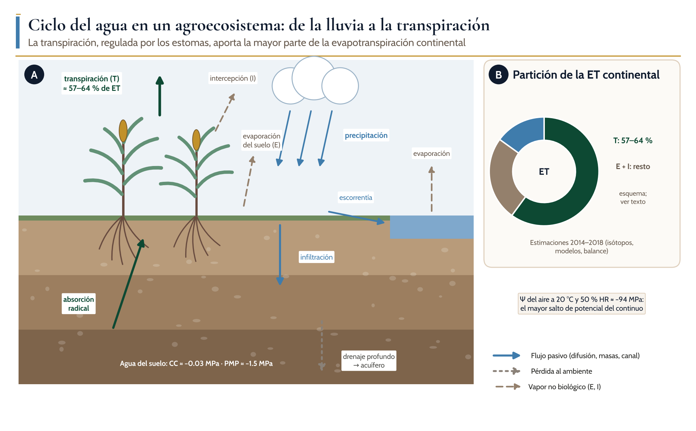
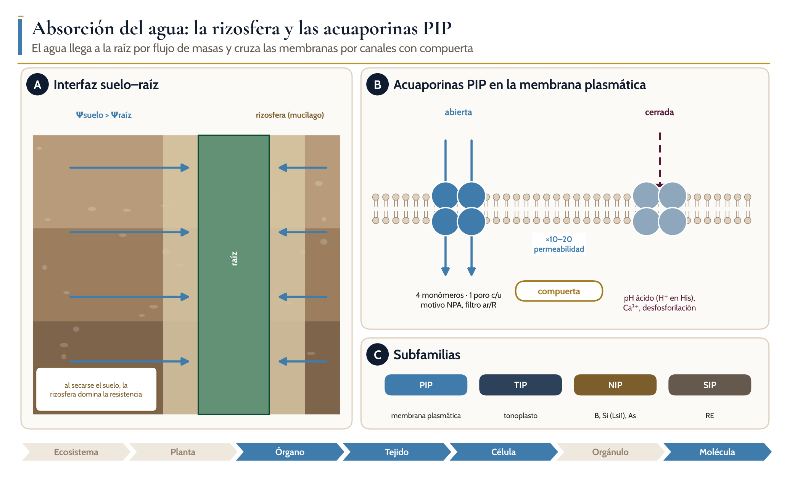
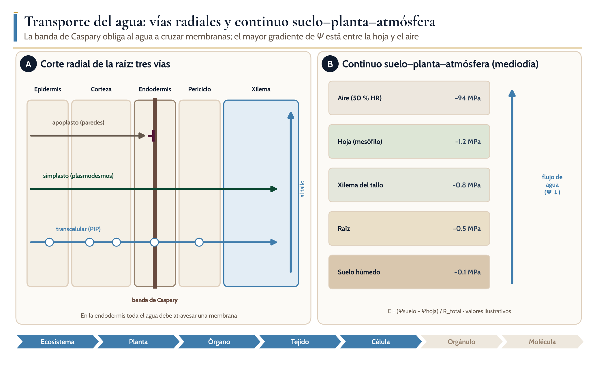
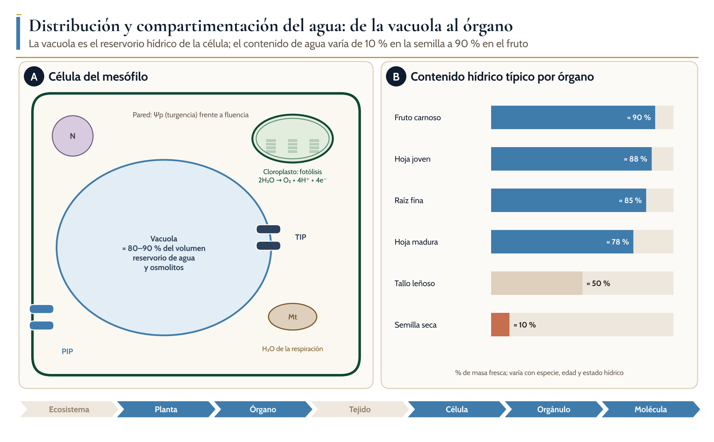
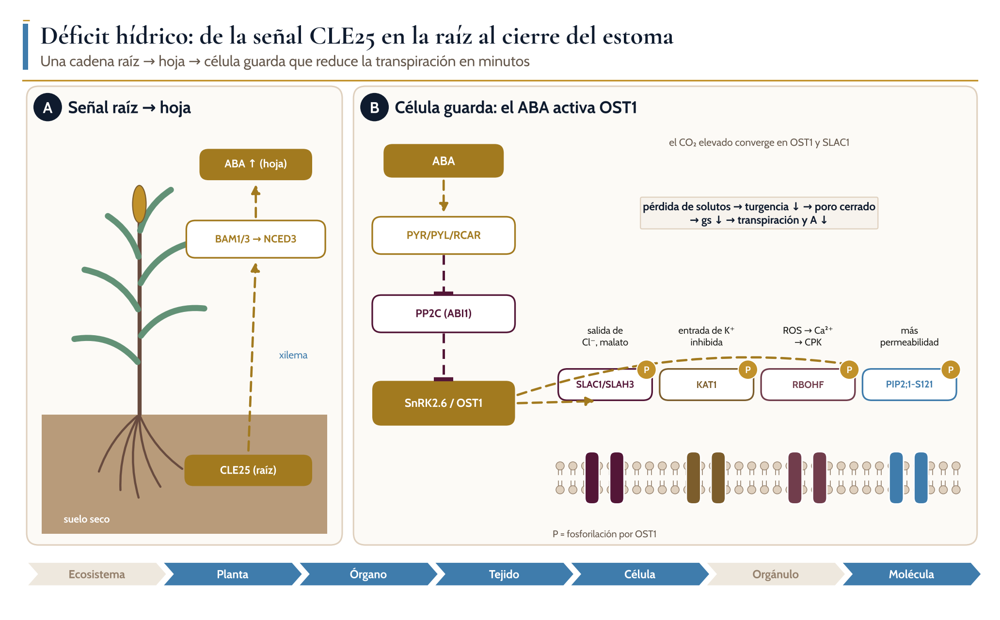
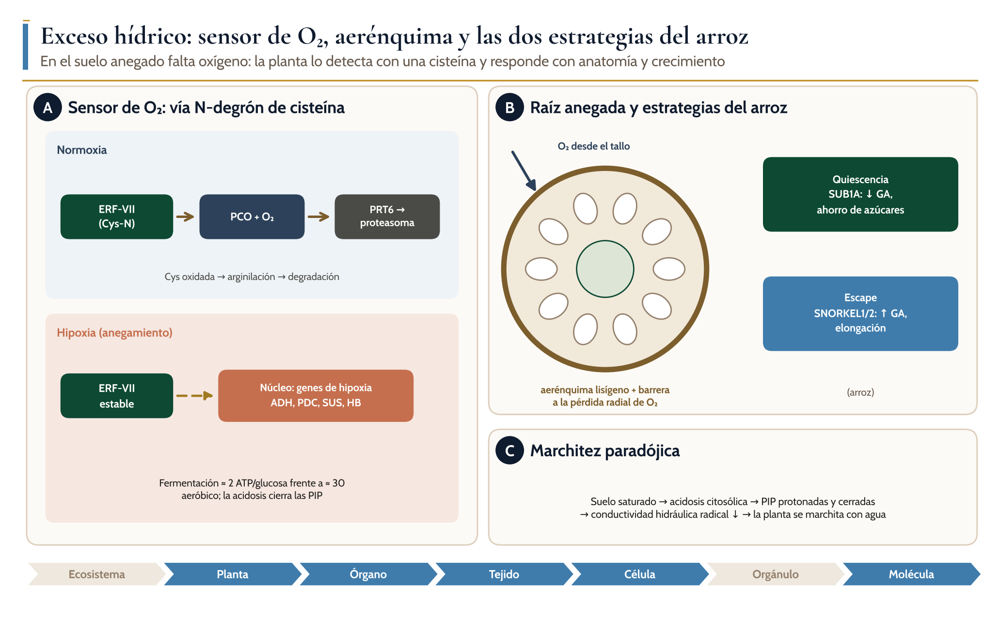

| Flujo | Símbolo y unidad | Control principal | Cómo lo modifica el manejo |
|---|---|---|---|
| Precipitación / riego | P, R (mm) | Clima; infraestructura | Calendario de riego, captación de lluvia |
| Intercepción | I (mm) | Índice de área foliar, arquitectura del dosel | Densidad de siembra, especie |
| Transpiración | T (mm d⁻¹) | Conductancia estomática, área foliar, DPV, radiación | Genotipo, fertilización, fecha de siembra |
| Evaporación del suelo | E (mm d⁻¹) | Humedad superficial, cobertura | Acolchado, labranza de conservación, cierre rápido del dosel |
| Escorrentía | Q (mm) | Infiltrabilidad, pendiente, cobertura | Terrazas, cultivos de cobertura, materia orgánica |
| Drenaje profundo | D (mm) | Textura, profundidad de raíces | Raíces profundas, láminas de riego ajustadas |
| Cambio de almacenamiento | ΔS (mm) | Capacidad de retención del suelo | Materia orgánica, estructura del suelo |
| Componente | Expresión | Signo y valor típico | Dónde importa |
|---|---|---|---|
| Osmótico (Ψs) | Ψs = −Cs·R·T (van ’t Hoff) | Negativo; −0.5 a −2.5 MPa en células | Vacuola, ajuste osmótico, salinidad |
| De presión (Ψp) | Turgencia (+) o tensión (−) | +0.1 a +1.0 MPa en células; −0.1 a −3 MPa en xilema | Expansión celular, estomas, transporte por xilema |
| Mátrico (Ψm) | Adsorción y capilaridad en matrices | Negativo; dominante en suelo seco y semillas | Suelo, pared celular, imbibición |
| Gravitacional (Ψg) | Ψg = ρw·g·h | +0.01 MPa por cada metro de altura | Árboles altos, caña de azúcar madura |
| Del aire (Ψv) | Ψv = (R·T / V̄w)·ln(HR) | −94 MPa a 20 °C y 50 % HR | Fuerza motriz de la transpiración |
El flujo volumétrico de agua a través de una membrana o un tejido es proporcional a la diferencia de potencial: J = Lp·ΔΨ, donde Lp es la conductividad hidráulica (m s⁻¹ MPa⁻¹).
A lo largo de todo el continuo suelo–planta–atmósfera se usa la analogía de la ley de Ohm: E = (Ψsuelo − Ψhoja) / R_total, donde E es la transpiración y R_total la suma de las resistencias en serie del suelo, la rizosfera, la raíz, el tallo y la hoja.
En la fase de vapor, la transpiración foliar se describe como E = gs·DPV / Patm. Por eso, con gs constante, la transpiración aumenta linealmente con el DPV.

| Subfamilia | Localización | Sustratos además de H₂O | Función destacada |
|---|---|---|---|
| PIP (PIP1, PIP2) | Membrana plasmática | CO₂ (algunas PIP1), H₂O₂ | Conductividad hidráulica de raíz y hoja; PIP1 y PIP2 forman heterotetrámeros |
| TIP | Tonoplasto | NH₃, urea, H₂O₂ | Equilibrio osmótico rápido entre citosol y vacuola |
| NIP | Membrana plasmática y RE | Ácido bórico, ácido silícico (Lsi1 en arroz), arsenito | Nutrición de B y Si; entrada de As en arroz |
| SIP | Retículo endoplásmico | Poco caracterizado | Función poco conocida |
| XIP | Membrana plasmática (ausente en gramíneas) | Glicerol, urea, H₂O₂ | Restringida a dicotiledóneas |
Con inhibidores (HgCl₂, azida) o mutantes, la contribución de las acuaporinas a la Lpr varía de 20 a 85 % según la especie, la edad de la raíz y la hora del día. En arroz llega a 79–85 % (Grondin et al., 2016); en cebada depende del tipo de raíz y la zona (Knipfer et al., 2011); y en maíz se asocia con la abundancia de PIP en la exodermis y la endodermis (Hachez et al., 2011).
Esta variación no es un error experimental: indica que la planta ajusta la proporción entre la vía célula a célula y la apoplástica según la demanda (Gambetta et al., 2017).

| Vía | Ruta | Resistencia relativa | Regulación | Selectividad para solutos |
|---|---|---|---|---|
| Apoplástica | Paredes celulares y espacios intercelulares | Baja hasta la endodermis | Banda de Caspary, suberina, exodermis | Ninguna antes de la endodermis |
| Simplástica | Citoplasma, a través de plasmodesmos | Intermedia | Apertura de plasmodesmos (calosa) | Alta: los solutos ya cruzaron una membrana |
| Transcelular | Cruza membranas en cada célula | Variable; depende de las acuaporinas | Compuerta de PIP/TIP: pH, fosforilación, Ca²⁺, internalización | Alta |

| Nivel | Dónde se distribuye el agua | Mecanismo de control | Escala de tiempo |
|---|---|---|---|
| Ecosistema | Suelo, dosel, atmósfera; redistribución hidráulica entre capas | Arquitectura radical, cobertura, especies con raíces profundas | Días a estaciones |
| Planta | Raíz–tallo–hoja según la demanda; capacitancia de tallos | Resistencias en serie, conducta iso/anisohídrica | Horas a días |
| Órgano | Hojas jóvenes y órganos reproductivos priorizados | Conductancia hidráulica foliar, venación, abscisión de hojas viejas | Horas a días |
| Tejido | Xilema (tensión), floema (presión), parénquima (reservorio) | Barreras endodérmicas, suberina, aerénquima | Días a semanas |
| Célula | Vacuola (80–90 % del volumen), citosol, pared | Ajuste osmótico, elasticidad de la pared | Minutos a días |
| Orgánulo | Cloroplasto (fotólisis), mitocondria (respiración), RE | Acuaporinas internas, osmolitos compatibles | Segundos a horas |
| Molécula | Canales PIP, TIP, NIP | Compuerta por pH, fosforilación, Ca²⁺; tráfico de membrana | Segundos a minutos |
En maíz, el flujo nocturno de agua hacia la raíz que crece en suelo seco se ha medido con radiografía de neutrones y agua deuterada (Hayat et al., 2020). Sin embargo, en experimentos con raíz dividida en lisímetros, la absorción compensatoria desde la zona húmeda dominó y la redistribución fue despreciable (Thomas et al., 2020).
La conclusión prudente es que el fenómeno existe en cultivos, pero su contribución al balance hídrico es mucho menor que en árboles.
| Función | Proceso | Nivel |
|---|---|---|
| Solvente y medio de reacción | Difusión y transporte de iones, metabolitos y hormonas; plegamiento de proteínas | Molécula a célula |
| Reactivo | Donador de electrones en el fotosistema II (2H₂O → O₂ + 4H⁺ + 4e⁻); hidrólisis; producto de la respiración | Orgánulo |
| Turgencia | Expansión celular (Ψp > umbral de fluencia de la pared); movimiento estomático; rigidez de órganos no lignificados | Célula a órgano |
| Transporte de nutrientes | Flujo de masas en el suelo, ascenso por xilema; vehículo del floema | Planta |
| Termorregulación | Enfriamiento por calor latente de vaporización (≈ 2.45 MJ kg⁻¹ a 20 °C) | Hoja y dosel |
| Señal | Cambios de turgencia e hidráulicos que se propagan más rápido que las hormonas | Planta |

La rapidez estomática mejora la coordinación entre gs y A con luz fluctuante, y con ello la eficiencia intrínseca en el uso del agua (McAusland et al., 2016).
Sin embargo, un estudio filogenético amplio encontró que las especies con estomas en mancuerna alcanzan mayores tasas de intercambio de gases, pero no mayor eficiencia en el uso del agua. Sus autores proponen que la presión evolutiva fue el intercambio de gases y no el ahorro de agua (Brench et al., 2025).
Es un buen ejemplo para el debate en clase: un rasgo puede ser ventajoso por razones distintas a las que se le suelen atribuir.

| Aspecto | Déficit (sequía) | Exceso (anegamiento) |
|---|---|---|
| Causa primaria | Ψsuelo bajo; alta demanda atmosférica (DPV) | Falta de O₂ en el suelo; acumulación de CO₂, etileno, Mn²⁺ y Fe²⁺ |
| Señal principal | CLE25, ABA, señales hidráulicas | Estabilización de ERF-VII; etileno atrapado |
| Efecto sobre las PIP | Regulación de la expresión y la fosforilación | Cierre por acidosis citosólica |
| Síntomas | Enrollamiento y marchitez, menor área foliar, aborto floral | Clorosis de hojas basales, epinastia, marchitez paradójica |
| Adaptaciones | Raíces profundas, ajuste osmótico, cierre estomático, cera cuticular | Aerénquima, raíces adventicias, barrera ROL, quiescencia o escape |
| Cultivo más tolerante | Sorgo | Arroz |
| Estrategia | Rasgo | Mecanismo | Evidencia en cultivos |
|---|---|---|---|
| Escape | Floración temprana | Evita la coincidencia de la floración con la sequía terminal | Variedades precoces de sorgo y maíz |
| Evitación (absorber más) | Raíces profundas, aerénquima cortical, menos células corticales | Menor costo metabólico por cm de raíz y mayor exploración | Maíz con mucho aerénquima: 8 veces más grano en sequía (Zhu et al., 2010) |
| Evitación (perder menos) | Transpiración limitada a alto DPV | Baja conductancia hidráulica (acuaporinas sensibles a Ag⁺) que conserva agua del suelo | Soja de marchitez lenta, umbral ≈ 2 kPa (Fletcher et al., 2007); maíz, 1.7–2.5 kPa (Gholipoor et al., 2013) |
| Evitación (conservar) | Menor dosel antes de la floración (stay-green) | Ahorra agua para el llenado de grano | QTL Stg1–4 en sorgo (Borrell et al., 2014a, b) |
| Tolerancia | Ajuste osmótico | Acumulación de K⁺, azúcares, prolina y glicina betaína que mantiene la turgencia | Asociado al rendimiento en 24 de 26 estudios (Blum, 2016) |
| Tolerancia | Margen de seguridad hidráulico | P50 más negativo que la tensión mínima | Predice la mortalidad (Anderegg et al., 2016) |
| Quiescencia (exceso) | SUB1A | Frena el gasto de carbohidratos y la elongación, con menor respuesta a GA | Arroz sumergido 1–2 semanas (Lin et al., 2019; Singh et al., 2017) |
| Escape (exceso) | SNORKEL1/2 | Elongación de entrenudos estimulada por GA | Arroz de aguas profundas (Singh et al., 2017) |
| Aireación (exceso) | Aerénquima y barrera ROL | Difusión de O₂ hacia el ápice radical | Arroz, maíz tolerante, soja (Colmer et al., 2013; Jia et al., 2021) |
| Cultivo | Fotosíntesis | Estrategia dominante | Etapa crítica | Práctica de manejo con evidencia |
|---|---|---|---|---|
| Arroz | C3 | Tolerante al exceso (aerénquima, SUB1A); sensible al déficit | Floración | Riego intermitente leve (AWD; ≥ −20 kPa) |
| Maíz | C4 | Evitación; transpiración limitada en algunos híbridos | Floración (sincronía estigma–polen) | Híbridos con transpiración limitada; riego en la floración |
| Sorgo | C4 | Evitación y tolerancia; stay-green | Llenado de grano | Genotipos stay-green; densidad ajustada |
| Caña de azúcar | C4 | Evitación; dependiente del dosel | Crecimiento formativo (3–6 meses) | Riego deficitario fuera de la etapa formativa; genotipos tolerantes |
| Soja | C3 | Marchitez lenta; sensible al anegamiento | R1–R3 (exceso) y R3–R6 (déficit) | Drenaje; genotipos de marchitez lenta |
1. Fecha de siembra: hacer coincidir la etapa crítica del cultivo (floración o llenado) con el periodo de menor riesgo de sequía o de anegamiento.
2. Cobertura del suelo: reducir la evaporación (E) para que el agua salga como transpiración (T), que es la que produce biomasa.
3. Elección del genotipo: buscar transpiración limitada o stay-green en ambientes de sequía terminal, y aerénquima y raíces adventicias en suelos que se anegan.
4. Riego: aplicarlo en las etapas críticas y aceptar un déficit controlado en las tolerantes; en arroz, usar AWD leve.
5. Integración con la nutrición: el N, el K y la micorriza modifican la conductividad hidráulica y el ajuste osmótico, como veremos en los módulos siguientes.
El agua no es un nutriente mineral, pero es el vehículo de todos los ciclos de nutrientes. La transpiración aporta entre 57 y 64 % de la evapotranspiración continental, y solo ella está acoplada a la producción de biomasa.
El potencial hídrico (Ψ) y la ley J = Lp·ΔΨ explican la dirección y la magnitud del flujo; el gradiente mayor está entre la hoja y el aire, y lo controlan los estomas.
Las acuaporinas PIP aportan una fracción variable (20–85 %) de la conductividad radical y se regulan por expresión, fosforilación, pH, Ca²⁺ e internalización.
La banda de Caspary (lignina) y la suberina convierten a la endodermis en un punto de control que integra agua, nutrientes y salinidad.
La señal CLE25–ABA–OST1 cierra los estomas mediante SLAC1, KAT1, RBOHF y PIP2;1; la hipoxia se detecta por la vía N-degrón de cisteína (PCO–ERF-VII).
La evitación (raíces, transpiración limitada, stay-green) y la tolerancia (ajuste osmótico, margen hidráulico) son blancos de mejoramiento con evidencia en los cinco cultivos.
referencias verificadas: artículos con DOI, consultados en bases bibliográficas, y libros de texto. La lista completa, con autores, año, revista y enlace, está en el manual del módulo.